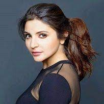

Born 5 November 1988 (age 34)
New Delhi, India
Nickname Cheeku[1]
Height 5 ft 9 in (175 cm)[2]
Batting Right-handed
Bowling Right-arm medium
Role Top-order batter
Relations Anushka Sharma (wife)
played for
Team india
RCB
Team B
World Cup
RCB semi
Favourite Food
Pizza
Vada Pav
Kanda Pohe
girlfriends
Deepika
Anushka
Friends
Dhoni
Rohit
K.L Rahul
Marriage Life
Wife:Anushka

Anushka Sharma is an Indian actress and former producer who works in Hindi films. She has received several awards, including a Filmfare Award.
Born 1 May 1988 (age 34)
Ayodhya, Uttar Pradesh, India
Alma mater Mount Carmel College, Bangalore (BA)
Occupation Actress
Years active 2008–present
Spouse Virat Kohli (m. 2017)